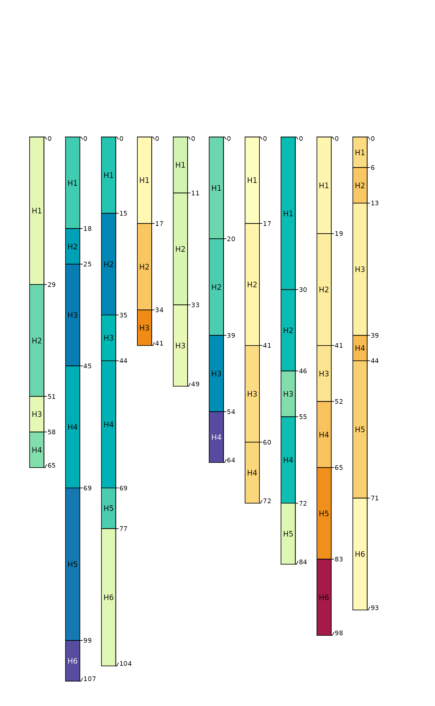
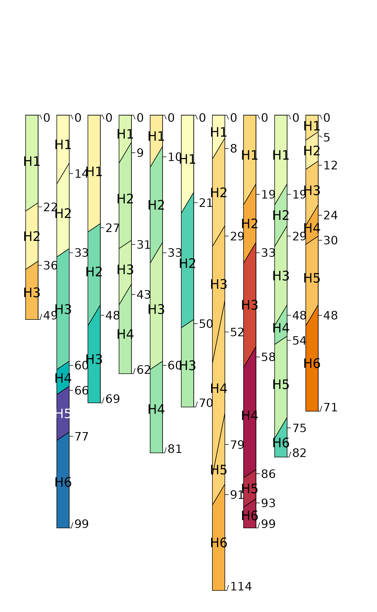
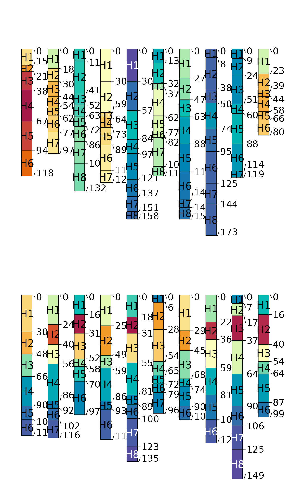
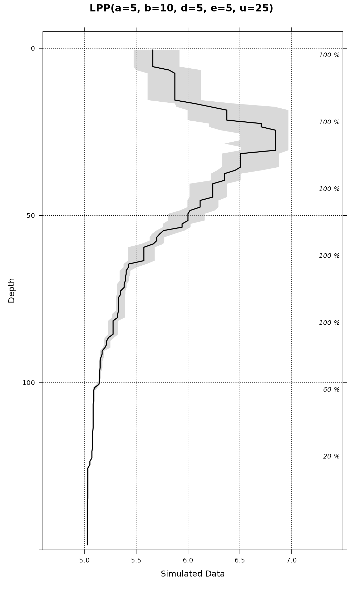
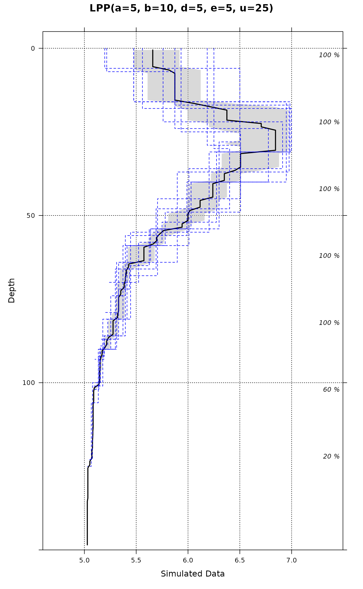

Generate a random soil profile according to set criteria, with correlated depth trends.
The random walk method produces profiles with considerable variation between horizons and is based on values from the normal distribution seeded with means and standard deviations drawn from the uniform distribution of [0, 10].
The logistic power peak (LPP) function can be used to generate random soil property depth functions that are sharply peaked. LPP parameters can be hard-coded using the optional arguments: "lpp.a", "lpp.b", "lpp.u", "lpp.d", "lpp.e". Amplitude of the peak is controlled by ("lpp.a + "lpp.b"), depth of the peak by "lpp.u", and abruptness by "lpp.d" and "lpp.e". Further description of the method is outlined in (Brenton et al, 2011). Simulated horizon distinctness codes are based on the USDA-NCSS field description methods.
Simulated distinctness codes are constrained according to horizon thickness, i.e. a gradual boundary (+/- 5cm) will not be simulated for horizons that are thinner than 3x this vertical distance
The rp() function is a convenient wrapper to this function, when requesting a simulated SoilProfileCollection of specified size.
Usage
random_profile(
id,
n = c(3, 4, 5, 6),
min_thick = 5,
max_thick = 30,
n_prop = 5,
exact = FALSE,
method = "random_walk",
HzDistinctSim = FALSE,
SPC = FALSE,
...
)Arguments
- id
a character or numeric id used for this profile
- n
vector of possible number of horizons, or the exact number of horizons (see below)
- min_thick
minimum thickness criteria for a simulated horizon
- max_thick
maximum thickness criteria for a simulated horizon
- n_prop
number of simulated soil properties (columns in the returned dataframe)
- exact
should the exact number of requested horizons be generated? (defaults to FALSE)
- method
named method used to synthesize depth function ('random_walk' or 'LPP'), see details
- HzDistinctSim
optionally simulate horizon boundary distinctness codes
- SPC
result is a
SoilProfileCollectionobject, otherwise adata.frameobject- ...
additional parameters passed-in to the LPP
.lpp) function
References
Myers, D. B.; Kitchen, N. R.; Sudduth, K. A.; Miles, R. J.; Sadler, E. J. & Grunwald, S. Peak functions for modeling high resolution soil profile data Geoderma, 2011, 166, 74-83.
Examples
# generate 10 random profiles, result is a list of SoilProfileCollection objects
d <- lapply(1:10, random_profile, SPC=TRUE)
# combine
d <- combine(d)
# plot
opar <- par(mar=c(0,0,3,2))
plotSPC(d, color='p1', name='name', cex.names=0.75)

par(opar)
# simulate horizon boundary distinctness codes:
d <- lapply(1:10, random_profile, SPC=TRUE, HzDistinctSim=TRUE)
d <- combine(d)
d$HzD <- hzDistinctnessCodeToOffset(d$HzDistinctCode)
opar <- par(mar=c(0,0,3,2))
plotSPC(d, name='name', color='p1', hz.distinctness.offset='HzD')

par(opar)
# depth functions are generated using the LPP function
opar <- par(mfrow=c(2,1), mar=c(0,0,3,0))
# generate data
d.1 <- lapply(1:10, random_profile, SPC=TRUE, n=c(6, 7, 8), n_prop=1, method='LPP')
d.1 <- combine(d.1)
# plot
plotSPC(d.1, name='name', color='p1', col.label = 'LPP Defaults')
# do this again, this time set all of the LPP parameters
d.2 <- lapply(1:10, random_profile, SPC=TRUE, n=c(6, 7, 8), n_prop=1, method='LPP',
lpp.a=5, lpp.b=10, lpp.d=5, lpp.e=5, lpp.u=25)
d.2 <- combine(d.2)
# plot
plotSPC(d.2, name='name', color='p1', col.label = 'Custom LPP Parameters')

# reset plotting defaults
par(opar)
# try plotting the LPP-derived simulated data
# aggregated over all profiles
a <- slab(d.2, fm= ~ p1)
a$mid <- with(a, (top + bottom) / 2)
library(lattice)
(p1 <- xyplot(mid ~ p.q50, data=a,
lower=a$p.q25, upper=a$p.q75, ylim=c(150,-5), alpha=0.5,
panel=panel.depth_function, prepanel=prepanel.depth_function,
cf=a$contributing_fraction, xlab='Simulated Data', ylab='Depth',
main='LPP(a=5, b=10, d=5, e=5, u=25)',
par.settings=list(superpose.line=list(col='black', lwd=2))
))

# optionally add original data as step-functions
if(require(latticeExtra)) {
h <- horizons(d.2)
p1 + as.layer(xyplot(top ~ p1, groups=id, data=h,
horizontal=TRUE, type='S',
par.settings=list(superpose.line=list(col='blue', lwd=1, lty=2))))
}
#> Loading required package: latticeExtra
